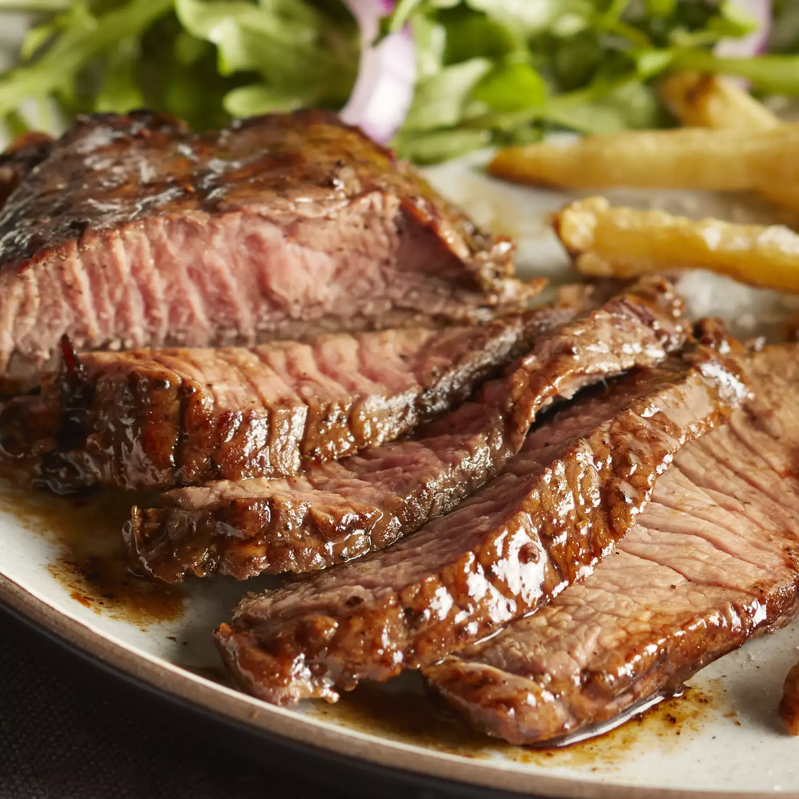

This steak marinade is a family recipe that has been developed only over the last 5 years. In this short time, it's made me famous in our close circle, but until now I've never shared it with anyone
Place olive oil, soy sauce, lemon juice, Worcestershire sauce, basil, garlic powder, parsley, white pepper, minced garlic, and hot pepper sauce in a blender; blend on high speed until thoroughly combined, about 30 seconds.
